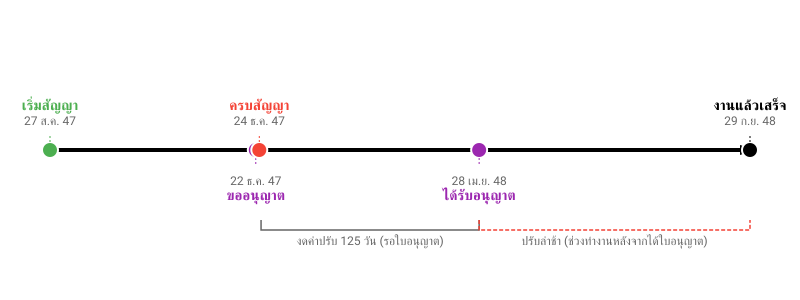

บทเรียนจากคำพิพากษาศาลปกครองสูงสุดที่ อ. ๔๑๓/๒๕๕๕
หนึ่งในปัญหาคลาสสิกของงานก่อสร้างประปาหรือวางท่อ คือต้องผ่าน "เขตทางหลวง" ซึ่งต้องขออนุญาตก่อน แต่ความผิดพลาดที่พบบ่อยคือ "เซ็นสัญญาไปแล้ว แต่ใบอนุญาตยังไม่มา"
คดีนี้เป็นอุทาหรณ์ชั้นดี เมื่อ อบต. สั่งปรับผู้รับเหมาเป็นเงินนับล้านบาท โดยอ้างว่าถึงจะยังไม่มีใบอนุญาตดันท่อลอดถนน แต่ผู้รับเหมาก็ควรไปทำงานส่วนอื่นก่อนสิ! ข้ออ้างนี้ฟังขึ้นหรือไม่? ศาลตัดสินอย่างไร? มาดูกันครับ
โครงการ: ก่อสร้างโรงสูบน้ำและวางระบบท่อประปาหมู่บ้าน มูลค่า 3.9 ล้านบาท เงื่อนไข: สัญญา 120 วัน ต้องแล้วเสร็จวันที่ 24 ธ.ค. 2547 จุดเกิดเหตุ: แบบก่อสร้างกำหนดให้ "ดันท่อลอดถนน" ในเขตทางหลวง 2 จุด ซึ่งตามกฎหมายต้องได้รับอนุญาตจากกรมทางหลวงก่อน
ไทม์ไลน์ความผิดพลาด: * เริ่มสัญญา: 27 ส.ค. 47 * ผู้ว่าจ้างยื่นขออนุญาต: 22 ธ.ค. 47 (ก่อนสัญญาหมดอายุแค่ 2 วัน!) * ได้รับอนุญาตจริง: 28 เม.ย. 48 (เลยกำหนดส่งงานไป 4 เดือนกว่า)

การลงโทษ: อบต. สั่งปรับผู้รับเหมาฐานส่งงานล่าช้า 279 วัน เป็นเงิน 1,115,721 บาท โดยให้เหตุผลว่า:
"ถึงจะยังดันท่อลอดไม่ได้ แต่ผู้รับเหมาก็ไปทำวางท่อส่วนอื่น (แผนงานหลัก) รอได้นี่นา ไม่เห็นต้องหยุดงานเลย ถือว่าละทิ้งงานเอง"
ศาลพิพากษาให้ "คืนเงินค่าปรับ" แก่ผู้รับเหมา จำนวน 499,875 บาท (คืนเฉพาะส่วนวันที่ล่าช้าเพราะรอใบอนุญาต) โดยให้เหตุผลที่ฟาดฟันข้ออ้างของราชการได้อย่างเฉียบขาด:
ศาลมองว่า หน่วยงานราชการควรต้องรู้แต่แรกแล้วว่างานนี้ต้องขออนุญาตกรมทางหลวง จึง "ควรเตรียมความพร้อมให้เรียบร้อยก่อน" แล้วค่อยให้เอกชนเข้ามาทำสัญญา การส่งมอบพื้นที่ที่ยังมีอุปสรรคทางกฎหมาย (เข้าทำไม่ได้เพราะผิด พ.ร.บ.ทางหลวง) ถือเป็น "ความผิดและความบกพร่องของฝั่งผู้ว่าจ้าง" เต็มๆ
ข้ออ้างที่ว่า "ให้ไปทำงานส่วนอื่นก่อน" ศาลมองว่า: * การให้ผู้รับเหมาเข้าไปทำงานในเขตทางหลวงก่อนได้รับอนุญาต = บีบบังคับทางอ้อมให้เอกชนทำผิดกฎหมาย (พ.ร.บ. ทางหลวง) * หากให้วางท่อส่วนอื่นมารอไว้ก่อน แล้วภายหลังกรมทางหลวง "ไม่อนุญาต" หรือให้เปลี่ยนจุดดันท่อลอด แนวท่อที่วางไว้อาจเสียหายและต้องรื้อใหม่ทั้งหมด ทำให้เกิดความเสี่ยงที่ผู้รับเหมาไม่ควรต้องแบกรับ
เมื่อเหตุล่าช้าเกิดจากความบกพร่องของหน่วยงานรัฐ (ขออนุญาตช้า) ผู้รับเหมาจึงมีสิทธิ์ได้รับการ "ขยายเวลาก่อสร้าง" เท่ากับวันที่เสียไป (ช่วงที่รอใบอนุญาต) ตามระเบียบพัสดุฯ การที่ อบต. ปฏิเสธไม่ยอมขยายเวลาให้ และเดินหน้าปรับเต็มจำนวน จึงเป็นการกระทำที่ไม่ชอบด้วยกฎหมาย
ศาลสั่งคืนค่าปรับ (ขยายเวลา) ให้ เฉพาะช่วง 125 วัน ที่รอใบอนุญาตเท่านั้น (25 ธ.ค. 47 - 28 เม.ย. 48) แต่ ไม่รวม เวลาทำงานหลังจากได้รับใบอนุญาตแล้ว (อีก 5 เดือน) เพราะ: 1. ยึดตามความผิดของรัฐ: ศาลมองว่า อบต. ผิดจริงแค่ช่วงที่ "ไม่มีใบอนุญาต" เมื่อได้ใบอนุญาตแล้ว ความรับผิดชอบกลับมาที่ผู้รับจ้าง 2. เวลาที่เหลืออยู่: เดิมผู้รับจ้างเหลือเวลาตามสัญญาแค่งวดสุดท้ายอีก 10 วัน แต่หลังได้ใบอนุญาตกลับใช้เวลาทำงานจริงถึง 5 เดือน ซึ่งนานกว่าแผนเดิมมาก ศาลจึงมองว่าส่วนนี้เป็นความล่าช้าของผู้รับจ้างเอง
สรุป: ศาลยุติธรรมตรงที่ให้ความเป็นธรรมในส่วนที่รัฐผิด แต่ก็ไม่ได้โอ๋ผู้รับจ้างจนเกินขอบเขตของสัญญาเดิมครับ
ในมุมมองของการบริหารสัญญา หากผู้รับจ้างไม่อยาก "รับสภาพ" แค่ 125 วัน ควรทำดังนี้ก่อนเริ่มงานใหม่: 1. ขอเวลาเตรียมการ (Remobilization): อ้างว่าหยุดงานไปนาน ต้องรื้อฟื้นเครื่องจักร/คนงาน ขอเวลา 15-30 วัน (ที่ไม่นับเป็นวันทำงาน) 2. อ้างความเสียหาย (Site Recovery): สำรวจหน้างานว่าดินสไลด์หรือท่อเสียหายหรือไม่ ขอเวลาซ่อมแซมก่อนเริ่มงานจริง 3. เสนอแผนงานใหม่ (Revised Schedule): ทำแผนงานจริงเสนอให้เซ็นรับรองว่า งานที่เหลือต้องใช้เวลา 45 วัน (ไม่ใช่ 10 วันตามกระดาษ) เพื่อใช้เป็นหลักฐานขยายเวลาเพิ่ม
อ้างอิง: คำพิพากษาศาลปกครองสูงสุดที่ อ. ๔๑๓/๒๕๕๕ (เดิมระบุเลขผิดเป็น ๒๑๓/๒๕๕๕)